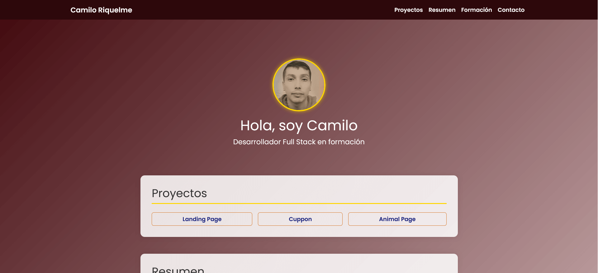

Mi Portafolio: Cómo lo creé y qué aprendí
Publicado: Julio 2025
Para mi primer proyecto como estudiante Full Stack, quise aplicar herramientas clave del desarrollo. Por eso, gestioné todo el código a través de repositorios en GitHub y utilicé GitHub Pages para publicar el sitio, permitiendo así que mis proyectos sean navegables.
Opinión
Este proyecto ha sido una experiencia de aprendizaje fundamental para mi avance en la materia. He aplicado mis conocimientos de HTML y CSS, y me he apoyado en herramientas de IA para desarrollar este portafolio. El proceso comenzó con la creación de una estructura HTML semántica. Para el diseño, utilicé el framework Bootstrap, lo que me permitió implementar rápidamente la barra de navegación y otros estilos. Se trata de un proyecto en continuo desarrollo. Aunque por ahora es una versión sencilla, mi objetivo es seguir añadiendo nuevas funcionalidades y un toque más personal a medida que adquiera y aplique nuevos conocimientos.
Competencias Adquiridas
- Fundamentos de HTML5: Implementación de una estructura semántica clara (nav, section, footer) para mejorar el SEO y la accesibilidad.
- Maquetación con CSS y Frameworks: Uso de Bootstrap y CSS personalizado para crear diseños modernos, adaptables a cualquier dispositivo (responsive).
- Flujo de trabajo de desarrollo: Organización de un proyecto desde la planificación inicial, el control de versiones con Git/GitHub y su despliegue final.